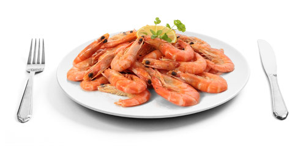
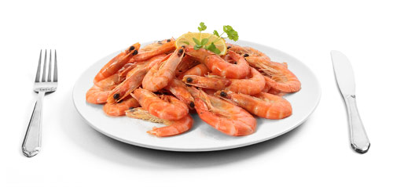
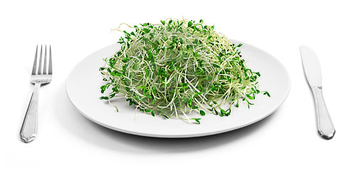
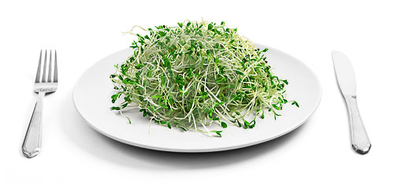
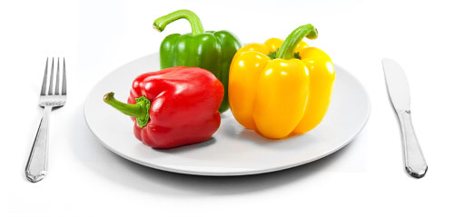
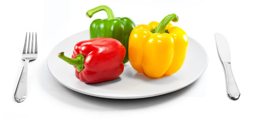

Production
Cattle are transferred from grazing ranges to feedlots once they weigh 650 pounds. Their diet is 95 percent grain, which lowers stomach acidity and puts the animals’ health at risk. The cattle are given antibiotics to keep them alive long enough to reach slaughter weight.
They are fed from troughs raised off the ground, where contamination can occur. Diseases can spread through animal-to-animal contact. Cattle are raised outdoors, and the winter rains bring a greater risk of mud and feces becoming caked in the cow’s hair.

Harvest
Once cattle are stunned (by electric shock or a stunbolt), the animals’ carotid arteries and jugular veins are severed, causing death from blood loss. The head and feet are removed. Before hide is removed, care is taken to cut around the digestive tract to prevent fecal contamination later in the process.
Carcasses are chilled to kill and prevent microorganisms and to reduce spoilage prior to distribution. The carcass is inspected by workers from the Food Safety and Inspection Service, an agency of the U.S. Department of Agriculture, and subject to different methods used to reduce levels of bacteria. USDA-regulated meat-handling facilities must have a FSIS inspector present during working hours.
Processing
After chilling, beef is broken down into different cuts for boxed meat. Carcasses are always split in half and quartered. The remaining carcass may be further processed to extract residual traces of meat, which may be used for human or animal consumption. Ground beef may be packed in different ways depending on the buyer. Some stores and supermarkets grind their own beef, while others have a central meat-cutting location.
Workers break down and clean all the equipment at least once a day. Many plants run two shifts and then clean. When workers go on break, they spray equipment with hot water.
Import
Eighty-four percent of our imported beef comes from Canada, Australia and New Zealand. FSIS workers inspect the meat at the processing plants.
Distribution
Large companies have their own fleets, while smaller companies hire trucks. Maintaining a temperature-controlled supply chain (cold chain) begins once the carcass is placed in a cooler and remains there while the beef is transported in cooled trucking beds. These steps are key to maintaining safety and quality.
Consumption
Ground beef has a shorter shelf life than whole-muscle cuts. The inside of a steak is sterile because it has not been exposed to air and contaminants, while ground beef, mixed up in the grinding process, is not sterile. Also, oxygen and water from broken muscle cells have been added during the process, which can introduce contamination and result in loss of flavor and nutritional quality.
The risk in preparing ground beef is cross-contamination with other foods. Prepare anything you’re eating raw (salad, etc.) first. Cook the meat last. Vigorously wash utensils used in preparing the raw meat and clean all surfaces that came in contact with the meat. Cook all ground beef thoroughly.


Production
The offspring of a small group of pedigreed birds lay eggs that are sent to hatcheries. After the eggs hatch, the chicks are sent to broiler farms. Contract growers raise them according to poultry company standards, but each farmer determines specific practices.
On the farm, chickens are kept in houses that protect them from the elements, wild animals and insects. Rats, mice, bugs and birds carry pathogens into the farms, and growers use pesticides and traps to keep them out. Heat and chemical treatments are used to prevent microbial growth in the wood chips and feces that line the floors of the houses.
Harvest
When chickens reach the desired weight, in four to eight weeks, they're taken to processing plants in special coops. Birds are taken out of coops and placed onto conveyor belts. Workers hang the birds on shackles, douse them in water and stun the birds by shocking them. The birds are passed through a rotating metal blade that slits their throats. They bleed out for about a minute.
Processing
The birds are scalded, defeathered and eviscerated, then soaked in chilled water. Everything is done automatically, although workers are present during the process. Workers clean and disinfect the production line daily. After leaving the chiller, carcasses are sent to another part of the plant – or another plant – and cut into pieces. Sometimes, machines debone the carcasses first. After that, workers place them on a conveyor line where the breasts and other cuts are removed by hand or by machine. The meat goes onto a final conveyer line to be packaged and shipped.
Distribution
Refrigerated trucks carry chicken meat from the processing plant to distribution centers for cold storage and repackaging. These centers send the poultry to secondary distribution centers, retail stores or restaurants. The shippers and receivers monitor temperature and try to prevent cross-contamination. Because warm temperatures create good growing conditions for pathogens, a small amount of bacteria can multiply to dangerous levels if the chicken is not kept cool.
Consumption
To maximize food quality and safety, the grocery store should be your last stop before going home. Never leave chicken in the car. Refrigerate immediately when you get home. Never leave the chicken on a countertop at room temperature. Packaged fresh chicken can be refrigerated in original wrapping in the coldest part of the refrigerator for one or two days. If rinsing a whole chicken or parts in cold running water, re-wrap for storage before cooking. Thoroughly clean the sink and countertops afterward.


Production
For 10 years, milk production per cow in the U.S. has increased 16 percent. In 2010, nearly 193 trillion pounds of milk was produced, an average of 21,149 pounds per cow. It takes roughly 10 pounds of milk to produce 1 pound of hard cheese.
Processing
When cheese is produced, mold forms during the fermentation process. Most molds are safe, but some are dangerous. Molds can contain toxins, called mycotoxins that spread through your food. Mold can grow throughout soft cheeses, such as cottage cheese and cream cheese, but it generally can't penetrate far into hard and semisoft cheeses. Always discard soft cheeses that contain any mold growth.
Import
Soft cheeses imported from Mexico could pose a potential health risk, according to U.S. Customs and Border Protection. Border Patrol officers seized 154 pounds of undeclared cheese from travelers entering the U.S. in 2010, 2,334 pounds in 2009 and 3,051 pounds in 2008. Samples of the confiscated cheese, including queso blanco and queso fresco, have revealed microorganisms that may be dangerous.
Distribution
The U.S. Food and Drug Administration has banned the shipment of raw (unpasteurized) milk for interstate commerce. It is not illegal to make or consume raw milk; however, the FDA is obligated to prevent the spread of possible pathogens. Unpasteurized soft cheeses implicated in disease outbreaks include brie, camembert, vacherin, homemade and unripened.
Consumption
Pregnant women should avoid drinking raw milk or eating foods made from raw milk, such as soft cheeses, as they may contain the potentially deadly bacteria listeria. Even if the woman does not feel ill, the fetus can be harmed. Only seven per million healthy people are infected with virulent listeria each year. In general, the harder the cheese, the longer the shelf life. Soft cheeses will keep for one to three weeks after opening while hard cheeses can keep for several months.


Production
Farmers purchase hens from breeders, who are required by the U.S. Food and Drug Administration to monitor them for salmonella. The FDA has limited resources to check compliance. Hens typically are housed in so-called high-rise facilities, with rows of cages stacked on top of each other. Hens eat from narrow troughs that hang on the outside of their cages. Rodents can infect feed by leaving bacteria-laden droppings in troughs. The FDA requires that hen houses trap rodents and keep records of the number of dead rodents. In newer hen houses, a manure belt runs beneath each row of cages to remove waste. But many facilities lack manure belts.
Harvest
Hens lay an egg nearly every day. Eggs roll down the sloped cage onto a belt that takes them to the end of the row for collection. If an egg breaks, it can attract rodents or spread bacteria to the shells of other eggs. According to FDA rules, eggs must be refrigerated within 36 hours of production. At room temperature, cells of salmonella can rapidly multiply.
Processing
After transport from farm to processing facility, eggs are washed with soap and water to remove dirt and manure. Salmonella can breed in the wash water if it is too acidic. Workers then package eggs in cartons and move them to loading docks, which are not usually refrigerated, and load them on refrigerated trucks.
Distribution
Supermarket chains purchase eggs and sell them under a host of brand names. During the 2010 egg recall, for example, the contaminated eggs were sold under more than 20 different brands. Retail outlets and restaurants are supposed to receive and store eggs at or below 45 degrees.
Consumption
Thoroughly cooking eggs kills dangerous bacteria. The U.S. Centers for Disease Control and Prevention recommends cooking eggs until both the white and yolk are firm. Child care facilities and nursing homes should use pasteurized eggs to guarantee that no harmful bacteria are present, as young people and the elderly are more likely to become ill from salmonella poisoning, according to the U.S. Food and Drug Administration.

 

Production
Once they mature in hatcheries, farm-raised shrimp are transferred to nurseries or directly to farms that hold them in ponds or tanks for several months until they are harvested with large nets. The diet of shrimp consists primarily of algae or commercial feed. In some countries, like China and Vietnam, the water may be fertilized with human waste and animal manure to promote the growth of algae. The use of untreated waste can cause bacterial growth and promote the spread of pathogens like salmonella. International shrimp farms also often use veterinary drugs and antibiotics that may or may not be legal in the U.S.
Processing
Shrimp can be delivered in many forms like breaded and processed or frozen, raw or pre-cooked. Typically, they are delivered to a processing facility and peeled and deveined in large machines. If they are going to be cooked before distribution, they are boiled in tanks, sorted and inspected. Whether or not shrimp are processed, peeled or frozen before distribution, temperature and time are the chief concerns. If not chilled, frozen, thawed or boiled at the proper temperature and time, shrimp can spoil easily, and pathogens can survive on the product.
Import
The U.S. Food and Drug Administration is responsible for overseeing the import of all shrimp products, 90 percent of which come from out of the country. Shrimp was the seafood product with the most shipments denied entry into the country in the past decade, accounting for nearly 22 percent of seafood refusals in the FDA import refusal records from 2002 to 2010. The top two reasons shrimp were denied entry during this period were "filth" and salmonella.
Distribution
Before shrimp are distributed, they are often put in oxygen-free packages to protect the product from spoilage. Whole shrimp will stay good in a temperature of minus 22 degrees Fahrenheit for six months and will keep longer if frozen in a block of ice. When distributed to retailers, they are kept in refrigerated trucks, and maintaining the temperature in these vehicles is vital to maintaining the quality of the shrimp.
Consumption
Perhaps the most effective way to prevent foodborne illness involving shrimp is during preparation. In restaurants and homes, preventing cross-contamination and cooking at high enough temperatures are essential in destroying any pathogens. As with all food preparation, cooks should thoroughly wash their hands and disinfect preparation areas before preparing shrimp. Seafood should be cooked to an internal temperature of 145 degrees, according to the FDA. If not thoroughly cooked, shrimp pose risks because they often carry pathogens.


Production
Before strawberry seedlings, grown in nurseries, are planted in the field, the soil is shaped into raised beds and covered in plastic sheeting. Holes where the seedlings will be planted are punched into the plastic. The plastic creates a barrier between the top of the plant that bears fruit and the soil. This avoids moisture buildup, which can create rot or soft spots susceptible to pathogen growth, and prevents microbial contamination. Irrigation water is tested for potential contamination from polluted runoff that may carry E. coli.
Harvest
Strawberries take about 30 days to mature from flower to fruit. They are hand-picked and packed in plastic containers. Harvesting may be the only time they are touched by human hands, making worker sanitation critical. To prevent contamination, field managers enforce protocols including the proper ways to wash hands and wear protective gloves. Spanish- and English-language materials have illustrations to cut across language barriers.
Processing
Less than two hours after strawberries are picked they are loaded on trucks and sent to cooling facilities, which maintain temperatures of 32-34 degrees Fahrenheit. The temperature ensures higher berry quality and increased shelf life and minimizes mold growth. The cooling facilities are monitored and thermometers regularly calibrated. Generally, strawberries intended for sale at farmers markets go straight to market.
Distribution
Within 24 hours of being cooled, strawberries are loaded onto refrigerated trucks and sent to restaurants and grocery stores across the country. Temperatures in the trucks are monitored en route and checked at delivery. Delivery trucks are checked for cleanliness to avoid cross-contamination with previous loads.
Consumption
For optimal shelf life, strawberries should be stored at between 36 to 40 degrees Fahrenheit and separated from raw meat to avoid cross-contamination. Before eating, rinse the berries and discard any that may contain mold. Studies show that after two days of storage strawberries begin losing nutritional content.


 

Production
Alfalfa sprout seeds come from all over the world. If pathogens are found in full-grown sprouts, they were probably present in the seed. Even if salmonella or E. coli levels in seeds are minimal, the moist conditions in which they grow allow the pathogens to multiply easily.
Seeds are sanitized in a calcium hypochlorite solution for 10 minutes and rinsed for 15 minutes. This can help reduce pathogens but won't eliminate them. The grower puts seeds in plastic trays with a thin layer of water where they sprout for six to seven days. Sprouts are sprayed with water every four hours. If pathogens are present, they multiply fastest in the first two days. After two days, the water in each sprout tray should be tested for salmonella and E. coli, but not all growers do it.
Harvest
The grower puts seeds in plastic trays with a thin layer of water or soil where they sprout. The sprouts are sprayed with water every four to six hours. After two days, the water in each sprout tray should be tested for salmonella and E. coli, but not all growers do so. If pathogens are present, they multiply fastest in the first two days. After six to 10 days, sprouts are pulled out of the trays and dumped onto a steel table for packaging in small plastic cartons.
Processing
After the sprouts are removed for packaging, sprout trays should be washed, rinsed and sanitized after each use with a chemical or organic cleaning solution. The steel surface used to package the sprouts should be continually cleaned to prevent cross-contamination. After packaging, sprouts are generally stored in a refrigerator below 41 degrees.
Distribution
Boxes of sprouts may be sold directly to consumers and stores or through distributors with refrigerated trucks. At the grocery store, sprouts are kept under constant refrigeration to avoid spoilage and should be stored away from raw meat and other sources of cross-contamination.
Consumption
Alfalfa sprouts are typically eaten raw, which is one reason why more than 30 foodborne illness outbreaks have been linked to sprouts since 1996. Some experts recommend cooking sprouts thoroughly before eating. This is rarely done, though, because alfalfa sprouts quickly wilt when heated. Sprouts will only stay fresh in the refrigerator for a few days and should be thrown away when they become slimy.
 

Production
Bell peppers, sensitive to freezing temperatures, are planted in early to late spring and harvested from April to November. Peppers grow close to the ground, so care is taken to prevent contamination from soil, water and pests. Soil and water are tested for contaminants and often fumigated. Chemical and biological controls are also used to prevent insects from causing and spreading disease. Releasing predator insects into the fields to kill those that pose a threat is becoming more common.
Harvest
Bell peppers may be harvested at the immature (green) stage or after the mature color (red or yellow) develops. Most fields are harvested at the mature color stage, though market price determines harvest time. Green and mature peppers may be harvested from the same field multiple times at 10- to 15-day intervals. Nearly all bell peppers are harvested by hand, which is how contamination most likely occurs. Many fields have strict sanitation rules requiring workers to wear gloves to ensure that their skin does not come into contact with plants. While still at the field, peppers are wiped off and packed into bulk bins or trailers for transport to a packing facility.
Processing
Some operations sort and pack peppers in the field; others immediately send them to a packing house where peppers are washed and cleaned with brushes to remove dirt and residue from the field. They are dried, graded by size and condition and sorted. Packing houses are subject to inspection by city, county, state, federal and third-party inspectors. The standard unit of sale is a carton holding approximately 26 to 28 pounds. Some growers of specialty bell peppers pack them in smaller cartons.
Distribution
To improve post-harvest quality, peppers are cooled before shipment or storage by chilled water (before packing) or forced-air (after packing). Peppers are sensitive to freezing below 45 degrees. Typical transportation and storage conditions are 45 to 55 degrees with high humidity (90 to 95 percent).
Consumption
Consumers should wash peppers to prevent cross-contamination. Peppers remain suitable for consumption for up to 15 days after harvest. General signs of damage to peppers include softening, discoloration and shriveling.